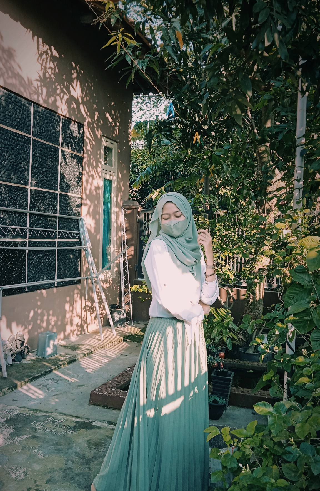

TENTANG SAYA
KEMBALI
PROFIL OWNER
| Nama Lengkap |
: |
PARAHITA |
 |
| Tempat, Tanggal Lahir |
: |
Cirebon, 29 Mei 2002 |
| Alamat |
: |
Ds.Buyut, Cirebon |
IG |
: |
Roseraa |
Short Story. Saat ini, saya sedang menempuh studi di STMIK IKMI Cirebon sebagai mahasiswa Manajemen Informatika semester 2.
Saya memilih jurusan Manajemen Informatika karena ingin melanjutkan pelajaran sewaktu SMK.
Sejak menggeluti dunia pemograman, saya menjadi lebih teliti, sabar, dan menyelesaikan masalah lebih tenang.
Motto belajar saya adalah "kalau nggak mau mengubah sesuatu yang bikin kita nggak berkembang, kita akan tetap di barisan paling belakang".